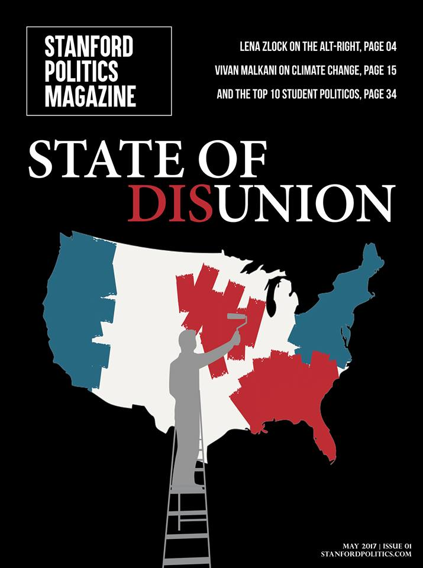

Stanford Politics
Below is my cover art for the first print edition of the Stanford Politics Magazine (formerly the Stanford Political Journal). I wanted to create a design that showcased the cover story, “State of Disunion.” The painted colors represent the idea of what is expected of our countries voting habits and the sharp contract explores what happens when those begin to bump up against one another, even to the point of colors being painted over. The figure in the foreground juxtaposes the complexity and disarray of the American election system with the simplicity of painting a map. As the gap between parties widens, the United States continues to feel more painted with red and blue.
